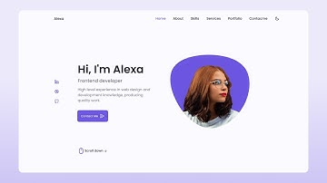
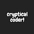
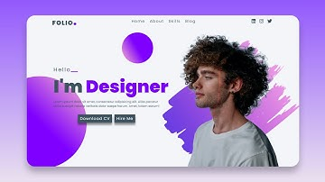

Create a Responsive Personal Portfolio Website Design using HTML CSS and JavaScript
Cryptical Coder
654K views • 1 year ago

Animated PORTFOLIO Website Template In Html CSS And JS | Personal Website with Typing Animation
WebKitCoding
364K views • 1 year ago

Responsive Personal Portfolio Website Using HTML CSS And JavaScript | Dark/Light Mode
Bedimcode
1.4M views • 2 years ago